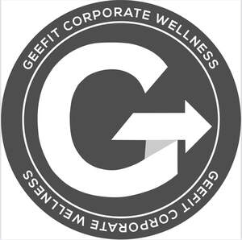

Trade Mark Journal No.2025/029 18 July 2025
UK00004231539 9 July 2025 (41)

- Class 41
- Corporate entertainment services; Health and wellness training; Health club services [health and fitness training]; Health and fitness club services; Health club [fitness] services; Health and fitness training; Personal fitness training services; Health club services [exercise]; Physical fitness education services; Sports and fitness services; Health club services; Personal trainer services [fitness training]; Provision of educational health and fitness information; Physical health education; Physical fitness training services; Fitness club services; Educational services relating to physical fitness; Education services relating to physical fitness; Exercise [fitness] advisory services; Providing fitness and exercise facilities; Personal training services; Provision of training services for business; Coaching services; Training services related to business; Consultancy relating to physical fitness training; Services for the provision of exercise equipment; Education services relating to yoga; Personal trainer services; Fitness and exercise instruction; Physical fitness instruction; Exercise and fitness classes; Fitness and exercise training services; Conducting fitness classes; Conducting physical fitness conditioning classes; Fitness training services; Training services relating to fitness; Physical fitness instruction for adults and children; Keep-fit instruction; Exercise instruction; Physical fitness consultation; Conducting training sessions on physical fitness online; Instruction in weight training; Pilates instruction; Instruction in group exercise; Sports and fitness; Training and instruction; Yoga instruction; Instruction in circuit training; Training in yoga; Gymnastics instruction; Instruction in gymnastics; Physical fitness centre services; Instruction in nutrition [not medical]; Personal coaching [training]; Conducting classes in exercise; Boxing instruction; Exercise classes; Instruction in diet [not medical]; Coaching [training].
Georgina Harris